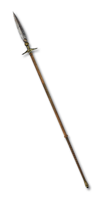

Each point adds one more hit to the chain.
+1 hit+# Hits to Chain Lightning and Lightning StrikeApplies to the supported skills below.
2 supported skills
Amazon
Sorceress
Get this effect
Runewords
Thunderhead
Xeth → Ort → Lum
3 sockets · Orb / Staff
+2 Hits to Chain Lightning and Lightning StrikeRequired level 55Expanse
Ort → Lum
2 sockets · Staff / Orb / Hand to Hand
+2 Hits to Chain Lightning and Lightning StrikeRequired level 37Stormlash
Ort → Mal → Ist
3 sockets · Spear
+2 Hits to Chain Lightning and Lightning StrikeRequired level 51Forked Path
Ort → Ko → Mal
3 sockets · Staff / Orb
+2 Hits to Chain Lightning and Lightning StrikeRequired level 49Aftershock
Thul → Dol → Io
3 sockets · Spear
+2 Hits to Chain Lightning and Lightning StrikeRequired level 35Magic & rare modifiers


of Branching
Magic & rare suffix
+1 Hits to Chain Lightning and Lightning Strike- Orb
- Staff
- Javelin
- Spear
Equipment

Skovos Stormtine
Stygian Pike
+1-2 Hits to Chain Lightning and Lightning StrikeRequired level 86
Thunder-Seer's Band
Coronet
+2 Hits to Chain Lightning and Lightning StrikeRequired level 52
Fork of the Storm
Hyperion Spear
+6-8 Hits to Chain Lightning and Lightning StrikeRequired level 90Oil & gem crafts


Black Oil
+ Perfect Topaz
- Orb / Staff / Spear
- +1 Hits to Chain Lightning and Lightning Strike